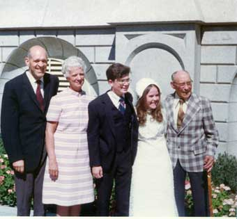
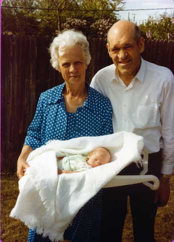

Both Forrest and Arvilla were strong in the gospel. Both had served missions, she serving in Texas and Louisiana in the late 1930's. Both had a love for the temple and its powerful influence. They were married on January 26, 1950.
Both Forrest and Arvilla were strong in the gospel. Both had served missions, she serving in Texas and Louisiana in the late 1930's. Both had a love for the temple and its powerful influence. They were married on January 26, 1950.By the time Forrest moved back to his family, his father had sold their home in West Tremonton and moved to Deweyville. He stayed home for the summer, but got restless and moved to Salt Lake City (his own words). There he went through many short-term jobs. He stayed in an apartment near the State Capitol. There he was introduced to Arvilla J... whom he soon married. Here are his words about the process:
"... there was a girl living in one of the apartments there that just knew that I was the one she had been praying for. But I couldn't stand her. She was such an odd person. She finally decided that I wasn't interested in her, so she decided that I should meet her girl friend. I thought if she was anything like her, I didn't want to be bothered. But I finally consented to meet her and it ended up that I married her, after about four months of dating. So we were married on 26 January 1950."
My understanding is that they decided in November that they should get married, and soon, since they were both no longer young people. He was approaching 32 years of age at the time and she was 35.
Marriage and Early Family Life
Both Forrest and Arvilla were strong in the gospel. Both had served missions, she serving in Texas and Louisiana in the late 1930's. Both had a love for the temple and its powerful influence. They were married on January 26, 1950.
A wedding Announcement reads:
COUPLE WEDS IN SALT LAKE TEMPLE
Mr. and Mrs. Eddie J... of Oak City, announce the marriage of their daughter Arvilla, to Mr. Forrest D Buchanan of Salt Lake City, son of Mr. and Mrs. Earl Buchanan of Garland, Utah. The impressive ceremony took place on Thursday morning January 26th in the Salt Lake Temple with President Robert D. Young officiating. Relatives and close friends witnessed the marriage.
Immediately following the ceremony Mr. and Mrs. J. Elmer Anderson of 1990 So. Main, Salt Lake City, uncle and aunt of the bride entertained at a wedding breakfast in honor of the bride and groom. Music for the guests was provided by Mr. Harper Stoneman, a vocalist, accompanied by Wilhelmina Stoneman Freeman.
The bride is an accomplished pianist, a former student of the BAC in Cedar City and filled her LDS mission in the Texas-Louisiana field. The groom served in the U. S. Army in World War II., filled a mission to the New England States, and is a member of the Orpheus Singers of Salt Lake City.
After honeymooning in southern California, the couple will make their home in Salt Lake City.
Forrest and Arvilla Buchanan first made their home with her uncle Elmer Anderson on 1990 South Main Street in Salt Lake City, but they soon moved to an apartment of their own at 134 A Street in the Avenues district of Salt Lake City. They were part of the South Eighteenth Ward of the Ensign Stake of the church. Forrest worked as a laborer, Arvilla worked at Deseret Book Company in Salt Lake City.
In December, Forrest and Arvilla became parents to their first child, a son, Joseph, born on the ... of that month. Here is a birth announcement, believed to be written by Forrest, showing his sense of humor:
To Whom It May Concern:
This will serve to introduce Joseph E. Buchanan, son of Forrest D. and Arvilla J. Buchanan of Salt Lake City, Utah. The young Mr. Buchanan was ushered into this city on December ..., 1950 by Dr. U. R. Bryner and assistant and immediately took up residence at the L.D.S. Hospital; but because of present housing conditions he found it necessary to change his address to 134 A Street.
With reference to young Mr. Buchanan's attributes, at the time of his arrival, his height was 21 1/2 inches and he weighed 8 pounds 13 1/2 oz. He has blue eyes , an extremely rosy complexion and has dark hair. His most outstanding feature is his lusty voice which he frequently uses to impress those around him.
Prior to his arrival here, he led a most active life, and judging from this he will undoubtedly continue his activity even more enthusiastically
If there is any further question as to his abilities, etc., please address your inquiries to Mr. Buchanan's permanent address listed above.
Proudly,
His Parents,
FORREST AND ARVILLA BUCHANAN
Between the time of the announcement and the blessing, it was decided that his middle name not be Eddie, for Arvilla's father, but rather Forrest (I believe that this change took place without Arvilla's prior knowledge - at the time of the blessing). The blessing was pronounced by Forrest on March 4, 1951 in the South Eighteenth Ward.
This was indeed a change in Forrest's life. He had gone through many experiences, mainly dictated by events outside of his control. He went by faith and trusted in his Heavenly Father, doing those things he needed to to be blessed and led to do the right things.
His Life, Love and Work in support for his Family
From the outset, it is obvious from his way of life that Forrest did everything in his power to support and bless his family, physically as well as spiritually. He was unable to bear recognition or attention, preferring rather to quietly serve. It was not until much later in his life that he would be able to accept a role that would put him in front of people in a leadership capacity. Mostly he was a quiet worker.
In his capacity as breadwinner, Forrest nearly always worked in jobs as an unskilled laborer, but always found ways to move up and learn new skills. Farming was his trade, but he had a good mind and he was always able to grow and learn.
We did not stay long in the avenues apartment. Sometime in April we moved to a home in Murray, 750 East 4200 South. Forrest worked at Maxfield Candy Company at this time. He learned candymaking skills from his mother (also evidenced in his mission journal). Some of his specialities in candymaking at home over the years included peanut brittle, homemade marshmallows coated in toasted cocoanut, divinity and the best of all was his famous pinoche (or penuche) also called olympian cream, which can also be found in the center of the well-known Maxfield Pecan Log. Unfortunately working with candy every day ruined his health. He suffered from colitis. He got an opportunity to work at the Wilford Stake farm in Lehi, near the Saratoga resort. Forrest was skilled at working farms and earned his living at the stake farm for about two years. This was an interesting place, the groundwater being very warm with geothermal energy. The culinary water was naturally hot and full of minerals. We had to cool it off to use it.
The Summer of 1953 found us in West Jordan in a nice home on Pole Line Road, 8119 South 2700 West, the home and land purchased on May 26, 1953. The owner of the candy company convinced Forrest to return to work at Maxfield's so he needed a place to live (having left the stake farm). Here in West Jordan, Forrest had some land, three acres to cultivate and a place to keep animals. He always had a milk cow and come chickens when he could, here and in some other homes. Here my brother Lynn was born on December .... Here also my mother Arvilla had serious back surgery, earlier in the year 1954. Our family stayed in West Jordan until early 1957 when the place was sold on 27 February to the Martaranos. The home and 3 acres of land sold for $9000. The statement accompanying the sale said that they left a Jersey cow, chickens, hay and coal with the property.
Forrest describes his decision as a mistake, deciding to sell the place in West Jordan and buying our Oakland Avenue home in South Salt Lake. His incentive for the move was to move closer to his workplace of Maxfield's (south and west of Salt Lake City). In South Salt Lake, we still had a little land, enough for a few fruit trees, a sizeable garden with a flowing well and a chicken coop. For a time, Forrest still had a cow or steer quartered, I believe in West Jordan somewhere. He was always working in different ways to support his family, both on the job and with his skills with land and animals.
After a short time, the problems of health returned caused by his candy tasting part of his duties at MaxfieldÍs, so he needed to look for work again. He found another farm job somewhere around May of 1958. We all moved to the Hi-Ute ranch, near Kimballs Junction along highway 40 near Park City. This work on the 2300 acre ranch was difficult. Hay and grain crops were raised, beef cattle grazed and needed to be fed during the bitter winters, where snow piled in six-foot drifts around the house and nighttime temperatures at times reached almost 40 degrees below zero. Still, through the arduous work and severe conditions, Forrest was able to do remarkable things. He raised peas when everyone told him it was impossible. He even raised some tomatoes, though the growing season was so short that only a few small fruits were harvested. He took care of the grounds and around the three houses in the little hollow, mowing the vast grassy lawns with a power mover. We lived in two of the three houses, the white one with 7 pines first and the rock house next. In his work on the ranch, he rode the hills of the ranch on horseback and on the tractor. He fed the cattle with bales of hay from a trailer pulled by the tractor. In the summers, we spent hours in the little canyons behind the ranch, harvested wild berries and rejoiced in nature. In the winter, he showed us how to ride sleds on the crusty snow drifts and often pulled us behind the tractor.
Forrest tells of several experiences of the remote ranch life. He explains in his writings that "we had to go to Park City to Church, and the boys had to go to Park City to School. I helped on the building of a new chapel while there. We had many rich experiences, and I got started in genealogy and was on genealogy committees. Our stake conferences were held in Kamas, Utah." He describes a terrifying experience where he realized the help of the Lord in overcoming a near disaster: "During the summer, I had a faith promoting experience. I was cleaning the irrigation ditches and doing some limited burning, keeping it well under control, when suddenly a whirlwind came upon me and scattered this fire into a stubble field about twenty feet away and those flames raced across that big field. I fought it until I was ready to collapse and I could see any minute that it would be burning up the hillside. I knelt down and asked for help and almost instantly the wind stopped and I was given added strength to quickly put out the flame."
Growing up, I always remember having a television set. Here on the ranch, reception was poor, so he worked to improve the situation: "There was a couple living in one of the homes on the ranch that they were renting. They bought a home up in Hoytsville. They had a special antenna, called a rhombic antenna. They could get a pretty good picture. They said we could try it while they were moving and if it worked for us we could get us one. It was a huge thing, about twelve feet long and eight feet wide shaped like a cross. They had it on a steel pipe anchored to a cedar post at the side of the house, the antenna reaching above the house. I had one of my nephews (David J...) helping me on the farm, and he was helping me take it down. We undid the guy wires and he held them out of the way while I began to let it down, when suddenly the most awful sensation went through me. I felt like I was going round and round and I could hear my nephew calling 'Uncle Forrest, uncle Forrest'. It knocked me out for a moment. I came to and then fell over again and my wife saw me fall and came running. The antenna was all crumpled up on the ground. It had come in contact with the power line which goes to Park City, which carries 7200 volts. We called the power company and they said it was classed as an electrocution. I had little pin-hole burns all over both hands, a big burn on my right forearm, but the main burn was just above my ankle bone." He recovered from the accident, though he had some adverse effects the rest of his life. I will explain more of the effects of this injury later in this history.
|
The family at the Oakland Avenue home with Goldie Kleinpeter, 1963 |
The home on Oakland Avenue in South Salt Lake, 1963 |
During these years, Forrest worked at other ways to improve himself. He took a course from the Commercial Trades Institute and received a diploma in 1959 in television repair. He built a television from a kit sent to him and had a tube tester for diagnosing television vacuum tubes. The television did not work very well and he did not find any real opportunity to use his skills in television repair. Having left school before finishing high school, Forrest was able to secure little more than unskilled labor in all his jobs. He decided to take some courses and get his high school diploma, receiving the diploma on June 11th 1965. To get his diploma, Forrest did not take the easy classes to get by. He studied chemistry and advanced math classes, and did very well in them. He was always intelligent and creative, which showed in all the things he did to support the family.
Around the time that he received his high school diploma, he started working at Eitel-McCullough, later called Eimac. He was a brazing furnace operator at the plant. During his time there, he received several awards, including cash for ideas that improved processes there. The caption for the picture here is: "Forrest Buchanan suggested that catch baskets be installed at the ends of the brazing furnaces to catch any assemblies which mught be tipped off the brazing boats. He received a $50 award form Dexter Shepherd". His inventiveness also included using the heat from the brazing furnaces to cook his lunch, usually a foil covered potato and some vegetables.
Though he was not ever very well paid in any of the jobs he held, Forrest provided well for his family, mainly because of his skills and abilities to make things work. He describes our experiences at Oakland Avenue: "We had a garden and access to a flowing well. I built a chicken coop, so we had our own eggs and meat. I also built a carport and a shop and a root cellar. I've always been handy with my hands, being able to tackle any job before me. I've never had to hire any one to fix plumbing, or electrical, or any repair work. It has always been easy to figure out problems that arise." He was able to do anything, though he, like all of us, had frustrations that are common to life and work. He did have a temper and would swear occasionally if he hit his thumb or had a part come loose at the wrong time.
|
Forrest on porch of Second West home, about 1970
|
Family Christmas tree in Second West home, about 1970
|
He describes the work "we" did to make the ground productive. It really was the work "he" did. My brother and I helped a little. It is amazing what work he did, though. Not only did he produce the normal kinds of vegetables, such as potatoes, tomatoes, corn, etc., he also tried Jerusalem artichokes, celery, okra and even peanuts. The last two varieties did not do well because of the short season. One year he tried to grow horse radish, with was quite successful. The problem was that it was too successful and when he tried to plow it under, it spread through out as a weed.
Forrest built sheds and hothouses for support of his garden work. In most places we had a root cellar for storage.
The chickens were both of the laying variety, traditional leghorns, and bantam hens with chicks. Those, he let run free, other than to keep the mother hens with chicks under A-frame enclosures to keep them safe from marauding dogs and cats. We also had a few unusual hens that laid odd colored eggs, including green shelled eggs. It was here that he taught me how to kill and pluck and skin chickens. Because of low income generally, we always supplemented our food supply with chicken meat, eggs and vegetables from the garden (as described in his writing).
We always took care of our own garbage, wet kitchen garbage being plowed into the ground as fertilizer, along with autumn leaves. Paper garbage was burned in the incinerator and eventually when enough material accumulated, the garbage was taken to the dump. We did not have a lot of packaging because most everything was produced from scratch.
One thing I remember about our time at this home was that he acquired an old 1950 DeSoto automobile. True to his abilities and confidence, he went about repairing the transmission on that car. He somehow found another of the same kind and with the parts of both got the car running. The transmission in that car was an unusual variety, called fluid drive or semi-automatic, a transition of sorts between a manual and automatic transmission. It seemed that he could make anything work when he put his mind to it.
Around this time we also acquired a tractor from my grandparents and drove it home, slowly along side roads for many hours, accompanied by family driving the family car. At another time, he sold or gave it to the Squires family, who had a farm in Mona, in Juab County. He drove it there as well, the same method,
Due to a misunderstanding or error, Forrest lost his job at Eimac. This was actually a fortunate turn of events, because he then started working at Deseret Press, where he worked until his death in 1980. At Deseret Press, a company owned by the Church of Jesus Christ of Latter-day Saints, Forrest was able to be part of the DMBA health plan (Deseret Mutual Benefit Association). With this insurance, the expense of his serious health problems at the end of his life were covered quite well.
In the years 1972 and 1973 Forrest and Arvilla generously offered their small home to take care of Arvilla's parents. Her father, Eddie was with us for a short time, but problems due to old-age dementia made it impossible to keep him there so he had to be placed in a nursing home in Delta where he died in 1972. Her mother, Sarah Delilah stayed with us up until her death in 1973.
After a while it was decided to move again. Forrest describes: "We could see that our stay couldn't last much longer at this location, because all the property around us was going commercial and it wouldn't be long before we would be crowded out. We listed the property for sale. We kept trying for about two years, then it finally came. In April of 1975 we sold the place and got a good price out of it. We then had to start again late in life to find a new place to live. Our son Lynn was in Japan on a mission at the time, but we were really impressed to come to Granger to look. The realtor that sold our place wanted to help us find a place. He had several places to show us. We liked each one, but the last one was more what we had been looking for, so we decided to take it. We sure felt like we were guided here. This is the best home we have ever owned...". As usual, he found a place with enough land to do extensive gardening. He worked hard on the soil again, putting kitchen garbage, leaves, gypsum, etc. into the soil making it more fertile. He planted many grape plants, raspberries and some fruit trees as well. It was always important to him to make sure he could provide for his family by physical means independent of his occupational income. This is where they lived when he died in 1980.
|
 At wedding of Joseph and Shauna, September 18, 1974
|
At wedding of Lynn and Janice, September 9, 1977
|
 Forrest with Mary at a family party at Maynes home in Sandy, 1978
|
 Forrest and Arvilla with baby Stephen, 1979
|
|
Forrest working quietly in the back yard of the Granger home
|
Appendix A - Life Timeline
Appendix B - Histories and journals
Appendix C - Mission Journal
Appendix D - Recipes